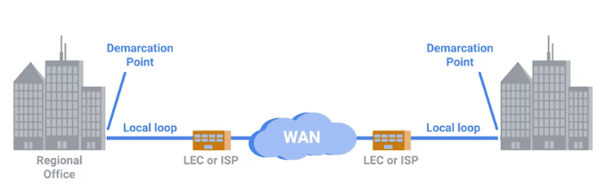

WANs
Tecnologías de red de área amplia
A diferencia de una LAN, o red de área local, WAN significa red de área amplia (wide area network). Una red de área amplia funciona como una sola red, pero se extiende a través de múltiples ubicaciones físicas. Las tecnologías WAN suelen requerir que contrates un enlace a través de Internet con tu ISP.
Imagina una red de computadoras en un lado del país y otra red de computadoras en el otro. Cada una de esas redes termina en un punto de demarcación, que es donde la red del ISP asume el control. El área entre cada punto de demarcación y la red central real del ISP se llama "bucle local". Este bucle local sería algo así como una línea portadora-T o una conexión óptica de alta velocidad a la oficina regional local del proveedor. A partir de ahí, se conectaría a la red central del ISP y a Internet en general. Las WAN funcionan por medio de varios protocolos diferentes en la capa de enlace de datos para transportar tus datos de un sitio a otro. De hecho, estos mismos protocolos son los que a veces trabajan en el núcleo de Internet en lugar de nuestro viejo conocido, Ethernet.

Retardo de fotograma: aquí,
HDLC, o control de enlace de datos de alto nivel: aquí
ATM, o modo de transferencia asíncrono: aquí.
VPNs punto a punto
Una alternativa popular a las tecnologías WAN son las VPN de punto a punto. En los últimos años, las empresas han estado trasladando cada vez más sus servicios internos a la nube. Veremos exactamente lo que esto significa más adelante, pero por ahora, basta con saber que la nube permite a las empresas subcontratar la totalidad o parte de sus diferentes piezas de infraestructura para que otras empresas las gestionen. Con estos tipos de soluciones en la nube vigentes, muchas empresas ya no requieren conexiones de altísima velocidad entre sus sitios. Esto hace que el gasto de una tecnología WAN sea totalmente innecesario. En su lugar, las empresas pueden usar las VPN de punto a punto para asegurarse de que diferentes sitios todavía puedan comunicarse entre sí.
Una VPN de punto a punto, también llamada VPN de sitio a sitio, establece un túnel VPN entre dos sitios. Esto funciona de manera muy parecida a cómo una configuración tradicional de VPN permite a los usuarios individuales actuar como si estuvieran en la red a la que se conectan. Solo que, en este caso, dispositivos de red en ambos lados manejan lógica de túnel VPN para que los usuarios no tengan que establecer sus propias conexiones.